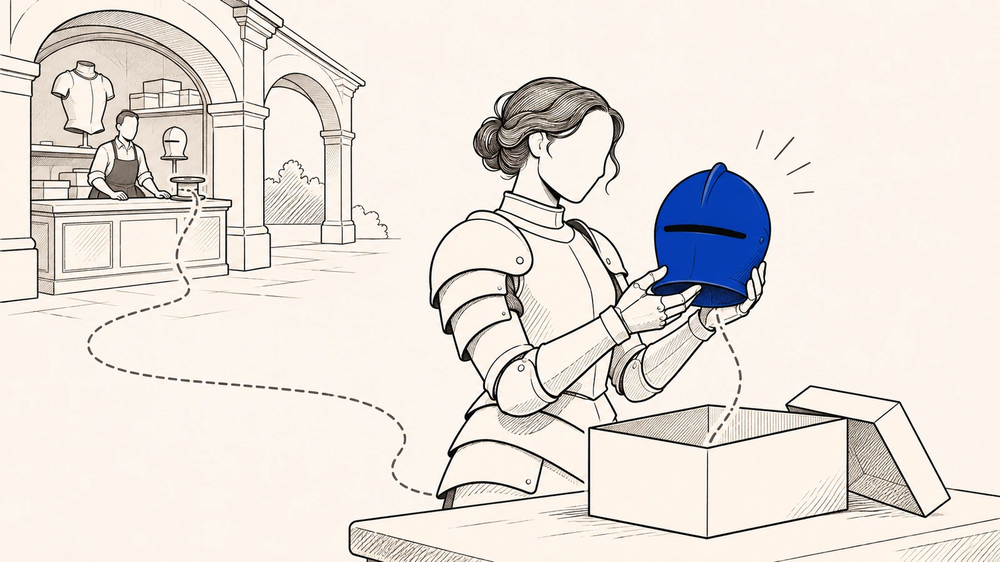
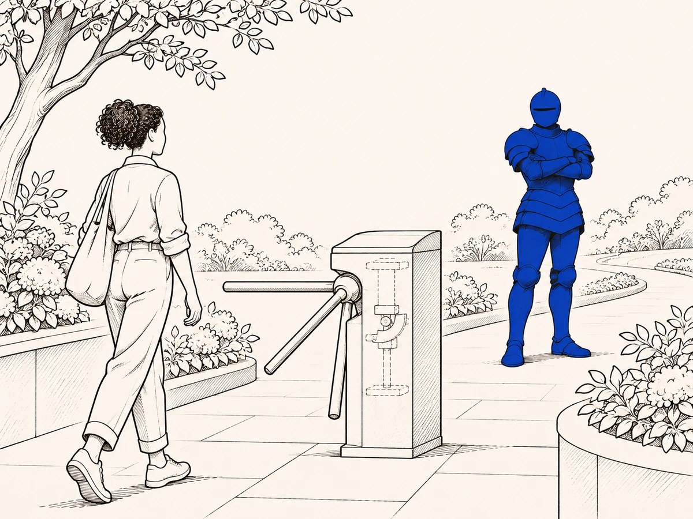
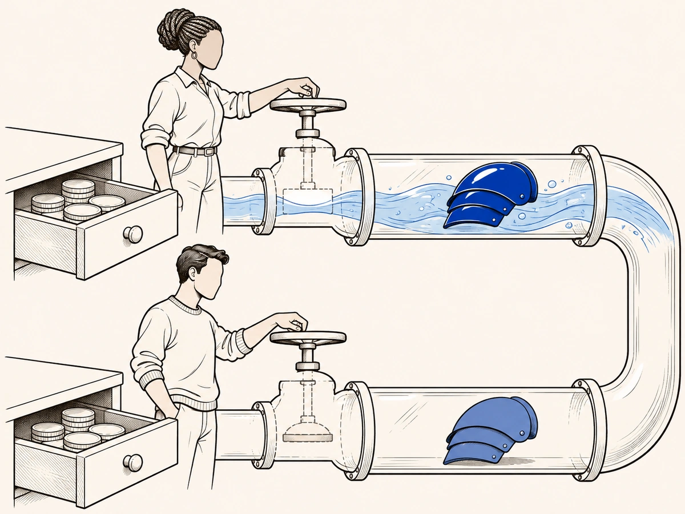

Caminho · Parte 1 de 11
O que você comprou, afinal?

De onde vem
Campeões, skins, emotes e moeda do jogo integram o catálogo de bens que só se tornam fruíveis como licença de acesso associada à conta, e não como coisas transportáveis para fora delap. 408
A cena mais comum é esta. Você abriu a loja do jogo, escolheu uma skin e apertou o botão que diz comprar. O dinheiro saiu do seu cartão e, poucos segundos depois, a skin apareceu no seu inventário, ao lado das outras que você já tinha.
A palavra do botão não está ali por acaso. No português de todo dia, e também no Código Civil, comprar é trocar dinheiro por uma coisa que passa a ser sua. Quem compra espera que a coisa fique, que não desapareça sem motivo e que dê para fazer alguma coisa com ela. Isso vale mesmo quando você sabe que o item é digital, porque a palavra desperta essa expectativa sozinha, como um atalho que a cabeça toma sem pensar.
De onde vem
Tanto o senso comum quanto até mesmo o próprio Código Civil brasileiro utilizam o verbo “comprar” sob o significado de se estar adquirindo algo que passa a ser “seu”, no sentido de que se espera estabilidade mínima, permanência e alguma forma de controle sobre o que foi adquiridop. 400-401
Sua estrutura clássica é a troca de coisa por preçop. 400
Mesmo quando se sabe que se trata de um item digital, o idioma da compra e venda aciona automaticamente essa expectativa típica e funciona como atalho de interpretação.p. 401
O jogo reforça essa leitura com outra palavra, coleção. O seu inventário não aparece como uma lista de arquivos, e sim como um acervo, arrumado para você completar séries, reconhecer o que é raro, comparar e exibir. Quem coleciona guarda a história de cada peça e cria com aquilo que juntou uma ligação que dura no tempo.
Por isso, quando uma conta é bloqueada ou um item perde a função que tinha, a perda não atinge só um arquivo solto. Ela atinge a coleção inteira, que só faz sentido enquanto o jogo continua reconhecendo e mostrando aquelas peças do jeito que você conheceu.
De onde vem
Colecionar não significa apenas reunir itens. Significa ordenar um acervo, reconhecer raridade, comparar valor, preservar histórico, completar séries, exibir pertencimento e construir uma relação de continuidade entre sujeito e objeto.p. 401
Por isso, eventual bloqueio de conta, remoção de item, alteração substancial de funcionalidade ou desvalorização arquitetural do acervo não atinge apenas uma unidade digital destacável. Atinge a inteligibilidade da própria coleção como feixe de fruição continuada, cujo valor depende de reconhecimento interno, estabilidade mínima e preservação da relação entre o consumidor, seus itens e o ecossistema que lhes atribui sentido.p. 401
Agora vem o que quase ninguém faz, que é abrir os termos de uso, o contrato que você aceitou ao criar a conta. Lá a mesma skin não aparece como compra. Ela aparece como conteúdo virtual, que a empresa oferece por meio de uma licença limitada e revogável, presa à sua conta.
Licença, aqui, quer dizer permissão de uso. Revogável quer dizer que essa permissão pode ser retirada, e o próprio contrato avisa que, se a conta for encerrada, a licença é cancelada na hora. Ou seja, a tela fala a língua da compra, enquanto o contrato fala a língua de um acesso com condições, administrado pela empresa.
De onde vem
Os Termos de Serviço descrevem os mesmos itens como “Conteúdo Virtual” oferecido sob licença de acesso vinculada à conta (Riot Games, 2024e). A consequência é que aquilo que a interface apresenta como “compra”, o instrumento contratual requalifica como acesso condicionado e institucionalmente administrado.p. 401
A própria disciplina contratual do serviço dá forma a esse arranjo ao estabelecer que o acesso aos Serviços, inclusive ao chamado Conteúdo Virtual, ocorre por licença limitada e revogável, condicionada ao cumprimento dos Termos, e que o encerramento da conta acarreta cancelamento automático da licença e perda do acesso aos conteúdos associadosp. 408
Em linguagem simples, isso significa que o acesso ao ecossistema é estruturado como permissão de uso condicionada, e não como propriedade de um bem autônomo.p. 408
E há um detalhe que joga a seu favor. Os mesmos termos que falam em licença reconhecem que há um conteúdo virtual ligado à sua conta, feito de moeda do jogo, skins, emotes e outros itens. E admitem que você pode tê-lo comprado, ganhado ou recebido de presente.
Isso ajuda a provar que o que você tem existe e pode ser identificado. O contrato mostra que o objeto está lá, mas não decide sozinho que regras valem para ele. E a lei do consumidor chama de produto também o que não tem corpo, de modo que a falta de um suporte físico não tira o item da proteção.
De onde vem
Os Termos de Serviço da Riot Games reconhecem expressamente um núcleo de “Conteúdo Virtual” associado à conta, composto por moeda do jogo, skins, emotes, acessórios e outros itens, e admitem que essa formação pode ocorrer por compra, ganho, presente ou outras dinâmicas internas do ecossistema.p. 575
A cláusula ajuda a provar a existência do objeto. Não esgota o seu regime.p. 575
A definição legal de produto no art. 3º, §1º, do CDC1 opera como cláusula de abrangência que impede a fuga da tutela protetiva quando o objeto não se apresenta sob a forma de suporte físico.p. 411
A lei não condiciona o produto à corporeidade, nem o prende à imagem da coisa tangível entregue de uma vez por todas.p. 574
Talvez você pense que a culpa é sua, por não ter lido. Não é esse o ponto. O que acontece é que o próprio jogo conduz a sua decisão com uma palavra que promete aquisição, enquanto guarda no contrato um regime que não corresponde ao sentido comum de comprar.
E não adianta dizer que a informação estava lá. Uma informação pode existir no contrato e mesmo assim não orientar ninguém, quando é a tela que conduz a experiência na hora da escolha. Você decide pela gramática da compra, mas usa o que comprou pela gramática da licença revogável.
De onde vem
O ponto não é afirmar que o consumidor “não leu” ou “não entendeu”, mas reconhecer que o próprio ecossistema organiza a decisão por um signo que enquadra a relação como contrato típico, enquanto reserva, no plano jurídico, um regime que não coincide com o sentido ordinário do verbo “comprar”.p. 401
A assimetria relevante não é apenas falta de informação, pois a informação pode existir e, ainda assim, não operar como orientação prática quando a linguagem da interface governa a experiência e estabiliza expectativas em tempo real.p. 401
O resultado é uma desigualdade objetiva de decodificação e de agência, porque o consumidor decide sob a gramática do “comprar”, mas a fruição se realiza sob a gramática da “licença revogável” associada à contap. 401-402
Então a palavra comprar é proibida?
Isso não quer dizer que a palavra comprar seja ilegal. O jogo pode usar as palavras de costume, e ninguém precisa trocar o botão. O problema começa quando não sobra, por trás da palavra, nenhuma estabilidade mínima naquilo que você comprou. Aí a comparação com a compra fica falsa, a expectativa que você tinha com razão é quebrada e só então aparece o ilícito, ou seja, algo que o direito não aceita.
Por isso a saída não é proibir a palavra. É exigir que a empresa responda pelas mudanças que faz, deixando registro delas, e que preserve uma função equivalente quando a mudança for legítima.
De onde vem
[...] o consumidor decide sob a gramática do “comprar”, mas a fruição se realiza sob a gramática da “licença revogável” associada à conta. Isso não serve de fundamento para afirmar que o uso da palavra “comprar” se mostra, por si só e isoladamente, ilícito.p. 401-402
A questão é que, sem um núcleo que respeite a estabilidade mínima do bem, até mesmo o paralelo superficial se torna falso e, portanto, conduz à quebra da legítima expectativa de fruição, somente assim configurando a ilicitude.p. 402
Não se trata de impedir o uso de expressões típicas, mas sim de garantir o mínimo atendimento à expectativa por via da fixação de responsabilidade pela auditabilidade de alterações e exigência de preservação de funcionalidade equivalente em caso de legítima alteração.p. 402
O que a sua conta guarda além do login?
Para entender o que você tem, o melhor ponto de partida é a sua conta. Ela não é só login e senha. É nela que ficam juntos o seu inventário, o seu progresso, o seu nome de jogador e os sinais pelos quais os outros reconhecem você no jogo. Personagens, skins, emotes e a moeda do jogo só funcionam presos a ela e não podem ser levados para fora.
É por isso que a conta segura tudo. Se alguém invadir a sua conta, você precisa abrir um chamado para que a empresa a recupere, o que mostra que ela é um registro que a empresa guarda e administra. E se a empresa encerrar a conta por entender que houve motivo, você perde o acesso a ela e aos dados ligados a ela. Perde também o conteúdo virtual, inclusive a moeda que pagou, e perde sem reembolso.
O contrato também não faz diferença entre quem passou anos juntando itens e quem acabou de chegar. A conta não fica mais sua porque recebeu dez mil horas de dedicação ou um dinheiro equivalente ao de um carro popular.
De onde vem
A conta do jogador no ecossistema Riot oferece um exemplo metodologicamente privilegiado de objeto imaterial de consumo em sua forma mais “infraestrutural”. Ela não se resume a uma credencial de login. Ela é o ponto organizacional que mantém unido o feixe de fruição, porque concentra, em um mesmo registro institucional, o inventário de conteúdos virtuais licenciados, os marcadores de progressão, os identificadores sociais e os sinais de reputação pelos quais a presença do usuário é lida, exibida e reconhecida no ambiente.p. 408
Campeões, skins, emotes e moeda do jogo integram o catálogo de bens que só se tornam fruíveis como licença de acesso associada à conta, e não como coisas transportáveis para fora delap. 408
Em orientação oficial, a Riot reconhece a hipótese de conta comprometida e afirma que, nesse caso, o usuário deve abrir um ticket para recuperá-lap. 409
Encerrada a conta, o usuário não terá mais acesso à conta, nem aos dados associados, nem ao Conteúdo Virtual, incluindo moeda do jogo, e a consequência é a perda definitiva sem reembolso quando o senhorio entende que havia motivop. 155
O contrato não distingue quem passou anos acumulando sinais de pertencimento e quem acabou de entrarp. 153
porque recebeu dez mil horas de dedicação ao longo de quinze anos, nem porque recebeu investimento compatível ao custo de um carro popularp. 154
O que uma catraca de metrô tem a ver com a sua skin?
O que você comprou existe e tem valor, mas só dá para usar do lado de dentro de uma catraca, dessas de estação de metrô, e quem controla a catraca é a plataforma. Ela decide quem passa, quem fica e em que condições, tanto pelo contrato quanto pela tecnologia.
O contrato tenta convencer você de que a catraca é tudo, como se o seu pagamento comprasse só uma tolerância para ficar lá dentro, que pode ser retirada a qualquer momento. Mas a catraca muda as condições de uso e não apaga o que você comprou.
De onde vem
O OIC, como concretização do produto imaterial no sentido do art. 3º, §1º, do CDC1, aparece aqui não como conteúdo neutro, mas como forma de mercadoria cuja fruição é subordinada a catracas contratuais e tecnológicasp. 186
E a conta, longe de ser um bem do consumidor, é descrita como um espaço privado cujo “direito” de uso se resume a uma permissão pessoal e revogável, que não se confunde com propriedade.p. 153
Compra-se, na prática, uma tolerância de acesso que pode ser retiradap. 153

De onde vem
como forma de mercadoria cuja fruição é subordinada a catracas contratuais e tecnológicasp. 186
E o que você comprou não deixa de existir só porque não dá para segurar com a mão. A própria empresa define no contrato o que é conteúdo virtual, dá nome aos itens e os liga à sua conta. Ela também admite que você pode conseguir esse conteúdo comprando, ganhando em missões ou recebendo de presente. Ao fazer isso, ela reconhece que existe ali um conjunto de coisas que dá para identificar, e esse reconhecimento desmonta a ideia de que nada foi entregue.
De onde vem
A empresa define expressamente “Conteúdo Virtual” como conjunto que inclui moeda do jogo, campeões, skins, emotes, acessórios e outros itens associados à contap. 566
e admite que esse conteúdo pode ser obtido não só por compra clássica, mas também por ganho, recompensa, presente ou outras dinâmicas internas do ecossistemap. 566
Primeiro, porque evidencia que o próprio desenho contratual reconhece um núcleo identificável de fruição associado à conta, o que desmonta a tese pueril de inexistência jurídica do objeto.p. 566
DireitoBens digitais
Coisas sem corpo também podem ser bens. Uma informação organizada no computador pode ter utilidade própria e fazer parte dos seus interesses, mesmo quando não vale dinheiro de imediato. Uma vez reconhecida como bem, ela pode ser usada, aproveitada, passada adiante e protegida pelo direito.
Esse ponto de partida é indispensável. Sem ele, valeria a ideia tosca de que tudo o que não se segura com a mão é leve, descartável e pode sumir pela simples vontade de quem vende. Mas ele não resolve tudo. Saber que a skin é um bem ainda não diz o que acontece quando a plataforma muda o jogo ou mexe na função do item. Nem diz o que vale quando ela decide sozinha, ao longo do tempo, como o item pode ser usado.
De onde vem
A informação digitalmente organizada pode assumir utilidade própria, integrar a esfera de interesses do sujeito e, por isso, ser tratada como bem incorpóreo juridicamente relevante, com ou sem conteúdo econômico imediatop. 565
Também é um ganho real dessa moldura reconhecer que, uma vez admitidos como bens, esses ativos se tornam suscetíveis de apropriação, circulação, fruição e tutelap. 565
Esse ponto de partida é correto e indispensável. Sem ele, o debate sobre consumo digital contínuo ficaria refém da ficção tosca segundo a qual tudo o que não se segura com a mão seria juridicamente leve, dissolúvel e descartável por simples vontade do fornecedor.p. 565
A insuficiência não estaria na incapacidade dessa moldura para reconhecer o ativo, mas no fato de que, mesmo reconhecendo apropriação e circulação, ela não esgota os conflitos de fruição contínua, mutabilidade unilateral e governança funcional em ambiente de plataformap. 566
Feixe de fruição governada
Então o que, exatamente, você tem? Não é só uma imagem colada no personagem. É um conjunto de coisas que a skin deixa você fazer e ser dentro do jogo. Com ela você joga a partida, aparece para os outros, completa a coleção e diz algo sobre quem você é naquele lugar.
Cada uma dessas coisas depende de o jogo continuar funcionando de um certo jeito. A skin precisa que o jogo siga capaz de desenhar o modelo, os efeitos e as animações, que mudam a cada atualização. E o que ela significa depende de os outros jogadores a verem e a reconhecerem. Por isso, mais do que uma coisa parada, o que você tem é uma posição de uso que a plataforma mantém e vai ajustando ao longo do tempo.
De onde vem
O consumidor não compra apenas uma “imagem” acoplada ao personagem. Ele adquire uma posição de fruição que só se realiza se o ambiente do jogo continuar capaz de renderizar modelos, efeitos, animações e interfaces que são reconfigurados a cada ciclo de patches e ajustes do sistemap. 439
A partir desse operador, o objeto pode ser descrito como feixe de funcionalidades e significações administradas ao longo da relaçãop. 426
O OIC não se comporta como “bem” apenas por uma utilidade funcional isolada, mas como feixe funcional e semiótico, em que a fruição depende de operações de legibilidade pública e reconhecimento coletivo.p. 252
A fruição deixa de ser simples habilitação inicial e passa a ser posição sustentada no ecossistemap. 426
A skin é dinheiro na gaveta ou água no cano?
Dinheiro guardado numa gaveta é estoque. Fica lá, parado, e amanhã continua sendo dinheiro. Água correndo num cano é fluxo, porque só chega à sua torneira enquanto alguém mantém a rede funcionando. A skin se parece mais com a água.
O valor dela não fica guardado num canto só seu. Depende de servidores ligados, de conexão e de um ambiente que a empresa mantém todos os dias. Tanto é assim que a própria empresa publica uma página que mostra se o serviço está funcionando. Quando o jogo cai, a skin continua na conta, mas naquela hora não serve para nada, porque o lugar onde ela funciona parou.
De onde vem
O valor de uso do feixe, nessa condição, não é estoque, é fluxo. Ele exige continuidade de servidores, conectividade institucional e manutenção do ambiente.p. 409
A Riot mantém uma página oficial de status do serviço, com mensagens atuais e histórico de ocorrênciasp. 409
Quando o serviço apresenta indisponibilidade, não é apenas o acesso que falha, mas o próprio conteúdo virtual perde utilidade imediata, porque o ambiente que o torna fruível deixa de operar.p. 409

De onde vem
O valor de uso do feixe, nessa condição, não é estoque, é fluxo.p. 409
Com tudo isso junto, fica claro por que a expressão licença revogável merece desconfiança. Ela dá a impressão de que nada foi entregue e de que tudo pode evaporar sem consequência. Mas, se existe um item que dá para identificar, ligado à sua conta e usado no jogo, existe algo que o direito precisa levar a sério. E isso vale mesmo que o contrato fale dele com palavras de coisa precária.
De onde vem
afasta, logo de saída, a fraude semântica da “licença revogável” como fórmula capaz de evaporar tudo o que já foi economicamente incorporado à esfera do usuáriop. 566
Se há objeto virtual identificável, associado à conta e fruído no ecossistema, há juridicidade a ser levada a sério, ainda que a plataforma tente recobri-la com vocabulário de precariedade.p. 566
Objeto Imaterial de Consumo (OIC)
A lei brasileira já tinha deixado espaço para isso. Em 1990, o Código de Defesa do Consumidor disse que produto é qualquer bem, material ou imaterial. A porta estava aberta para bens que circulam sem corpo e que dependem de condições técnicas mantidas o tempo todo. Mas a maneira de pensar o produto continuou presa ao objeto físico, ou a uma entrega que começa e termina num instante.
Era como um terreno que a lei demarcou e que ficou vazio. O OIC é a construção feita nesse terreno. Ele é a categoria jurídica do caso em que aquilo que você consome depende, de forma estrutural, de um ambiente que a plataforma administra, ajusta e pode mudar.
Quando é assim, existe produto imaterial no sentido da lei do consumidor. O serviço não some dessa conta, porque aparece como o modo pelo qual a empresa mantém, atualiza e molda aquilo que você comprou. Por isso perde força a velha briga sobre se o caso é de produto ou de serviço. A pergunta que importa passa a ser como a empresa organiza a entrega contínua do que vendeu e se esse jeito de fornecer preserva ou estraga o que você adquiriu.
De onde vem
Produto é qualquer bem, móvel ou imóvel, material ou imaterialp. 24
O Artigo 3º, §1º, do Código de Defesa do Consumidor já contém a abertura normativa necessária ao reconhecimento de bens que circulam sem suporte corpóreo estável e cuja fruição depende de condições técnicas e organizacionais contínuas.p. 24
É necessário reconhecer, entretanto, que essa expansibilidade do Direito do Consumidor brasileiro tem sido freada por uma ontologia estritamente material, a qual insiste em reduzir o produto à entrega de um suporte físico ou de uma prestação discreta e finalizávelp. 24
O Objeto Imaterial de Consumo (OIC) apresenta-se, nesse sentido, como o loteamento definitivo de um terreno que o legislador de 1990 já havia demarcado, embora a doutrina contemporânea o tenha mantido na condição de um terreno baldio.p. 24-25
Importa reconhecer situações em que a utilidade economicamente fruída depende estruturalmente de ambiente administrado, modulado e mutável por governança privadap. 717
O que se afirma é que, sempre que a utilidade consumida se apresente como posição de fruição sustentada por governança privada contínua, haverá produto imaterial em sentido juridicamente relevante para a incidência do art. 3º, § 1º, do CDC1.p. 718
A prestação não desaparece, mas comparece como modo de sustentação, atualização e conformação do próprio objeto de consumo. Por isso, a antiga pergunta sobre se o caso envolve produto ou serviço, tomada em chave excludente, perde grande parte de sua utilidade analítica. O problema passa a ser a estrutura do fornecimento e o modo como ela organiza, preserva ou degrada a experiência adquirida.p. 718
De quantos jeitos um item vale dentro do jogo?
Dentro de um jogo, o que se compra pode ter formas bem diferentes, e vale saber de qual delas é a sua. Há o que vale pela aparência, como a skin, que mostra algo aos outros e marca o seu lugar no jogo. E há o que vale como caminho, como o passe de um evento, em que você não recebe um prêmio pronto, e sim o direito de percorrer uma trilha de metas e recompensas.
Também há o que garante a sua entrada e a sua permanência, como a conta, que na prática funciona como uma posição que pode ser retirada. Há as funções, como permissões e facilidades de uso que fazem parte do que você paga. Há o tempo, com temporadas, prazos e itens que só voltam à loja de vez em quando, ou nunca mais. E há a reputação, o reconhecimento que o próprio jogo mede, por exemplo pela sua conduta, e que pode travar recompensas quando cai.
Na vida real essas formas se misturam, e uma skin de edição limitada vale ao mesmo tempo pela aparência e pelo tempo. Separar uma da outra ajuda a ver o que exatamente foi atingido quando algo muda, mesmo que o item continue lá.
De onde vem
A primeira categoria é a dos objetos cosmético-ornamentais. São OICs cuja utilidade não se esgota em atributos funcionais de desempenho, pois incorpora valor simbólico realizado como distinção, pertencimento e reconhecimento no ecossistema.p. 489
A segunda categoria é a dos objetos de progressão.p. 489
Um primeiro exemplo, típico de objeto de progressão, é o passe de evento, no qual a aquisição não se dirige a um resultado pronto, mas ao acesso a uma trajetória metrificada de marcos e recompensasp. 491
A terceira categoria é a dos objetos de acesso e permanência.p. 489
Trata-se de OICs marcados por dependência intensa de conta, credenciais e elegibilidade, de modo que a fruição assume, na prática, a forma de posição revogávelp. 489
A quarta categoria é a dos objetos de funcionalidade. São capacidades instrumentais disponibilizadas ao consumidor sob parâmetros técnicos e normativos administrados pelo fornecedor, como permissões de uso, utilidades de conveniência, possibilidades de configuração e capacidades de conversãop. 490
A quinta categoria é a dos objetos de tempo. Ela abrange estruturas temporais que condicionam quando, por quanto tempo e sob quais janelas a fruição pode ocorrer, como regimes de validade, temporadas, ciclos de disponibilidade e limites de frequência.p. 490
Em linguagem operacional acessível ao público, certas categorias de skins são tratadas como “legado” ou “limitadas”, com variações sobre se retornam ou não à loja e sob quais condições, de modo que a utilidade simbólica do adquirido passa a depender, também, de uma temporalidade institucionalmente administradap. 491
A sexta categoria é a dos objetos de reputação. Correspondem a posições de reconhecimento instituídas pelo ecossistema por métricas, critérios de validação e dispositivos de visibilidade.p. 490
O sistema de honra opera como mecanismo de reconhecimento comparável e socialmente inteligível, mas, ao mesmo tempo, como disciplina cotidiana, pois penalidades de comportamento podem travar a progressão reputacional e afetar, de forma prática, o acesso a recompensas associadas à criação de espóliosp. 492
As categorias propostas não eliminam a complexidade do ecossistema nem pretendem reduzir objetos concretos a um único tipo. Elas fornecem linguagem comparável para decompor arranjos híbridos em dimensões controláveis e localizar, com precisão, quais aspectos foram afetados por uma modulação relevante.p. 492
Essa tipologia é deliberadamente interna ao laboratório de jogos e não se oferece como classificação geral de plataformas.p. 489
O seu caso responde sim às quatro perguntas?
Nem tudo o que é digital entra nessa categoria, e é bom saber disso antes de reclamar. O que decide não é o item ser digital nem o nome que a empresa dá a ele. É o quanto aquilo que você usa depende de um ambiente que a plataforma governa. Quatro perguntas ajudam a ver isso, e o seu caso precisa responder sim a todas elas.
A primeira é o que foi prometido. Não basta dizer que havia algum conteúdo disponível. É preciso dizer qual utilidade foi vendida, ou seja, o que a skin deveria deixar você fazer e significar, e isso não se tira de slogans nem de listas de enfeite.
A segunda é se a compra abriu uma posição que dura. No consumo contínuo, comprar não é receber um pacote e pronto. É ganhar um lugar no jogo que precisa continuar existindo para que a coisa sirva.
A terceira é se a plataforma governa esse lugar de verdade. Não basta haver tecnologia no meio do caminho. É preciso que existam regras internas, escolhas sobre o que aparece e punições que moldam o seu uso e trazem consequências para você.
A quarta é se a coisa pode piorar sem sumir. É o caso em que o acesso continua, mas o que você tinha é rebaixado, esvaziado ou reorganizado contra o que foi prometido. Uma instabilidade de um dia ou um ajuste neutro na tela não contam.
De onde vem
O critério, portanto, não é a materialidade do suporte nem a nomenclatura empregada pelo fornecedor, mas a dependência estrutural da fruição em relação a um ambiente governado.p. 719
Como filtro, define o que entra e o que permanece fora do campo de incidência, impedindo que qualquer relação digital com aparência de continuidade seja absorvida pela categoria e impedindo, também, que o fornecedor expulse o conflito do CDC por rotulagem estratégicap. 428
A pergunta relevante não é se houve um “conteúdo” disponível em algum momento, mas qual utilidade foi economicamente ofertada em termos de funcionalidades e significações que, no regime do OIC, constituem o adquirido.p. 428
O critério não se satisfaz com listas ornamentais de funcionalidades nem com slogans publicitários genéricos.p. 428
Em consumo contínuo, a aquisição inaugura uma posição no ecossistema e não uma entrega exaurida em um instante.p. 428
O filtro aqui é decisivo, pois não basta a presença de mediação técnica em sentido trivial. Importa a existência de critérios internos e de mecanismos executivos que conformam estruturalmente a experiência de fruição e distribuem consequências ao consumidor.p. 428
Trata-se de delimitar a zona em que a fruição continua existindo formalmente, mas é rebaixada, esvaziada ou reconfiguradap. 429
O roteiro de qualificação deve exigir a demonstração de um padrão de degradação que não se confunde com variações ordinárias, instabilidades pontuais ou ajustes neutros de interface.p. 429
A incidência não se decide por intuição tecnológica nem por deferência automática ao contrato, mas pela presença cumulativa de elementos verificáveis do regimep. 429
Responda às quatro perguntas em ordem. Com sim em todas, o seu caso entra na categoria. Com um não em qualquer delas, a lei continua protegendo você.
Isso é uma triagem, e não uma sentença. O que decide é encontrar os quatro ao mesmo tempo, e não a impressão de que a tecnologia está no meio. p. 429
De onde vem
A pergunta relevante não é se houve um “conteúdo” disponível em algum momento, mas qual utilidade foi economicamente ofertada em termos de funcionalidades e significações que, no regime do OIC, constituem o adquirido.p. 428
Em consumo contínuo, a aquisição inaugura uma posição no ecossistema e não uma entrega exaurida em um instante.p. 428
O filtro aqui é decisivo, pois não basta a presença de mediação técnica em sentido trivial. Importa a existência de critérios internos e de mecanismos executivos que conformam estruturalmente a experiência de fruição e distribuem consequências ao consumidor.p. 428
Trata-se de delimitar a zona em que a fruição continua existindo formalmente, mas é rebaixada, esvaziada ou reconfiguradap. 429
A incidência não se decide por intuição tecnológica nem por deferência automática ao contrato, mas pela presença cumulativa de elementos verificáveis do regimep. 429
O quinto limite é o caso em que o núcleo do conflito é outro, como vício pontual clássico, cobrança indevida, publicidade enganosa localizada ou inadimplemento específico de oferta. Nessas hipóteses, a dogmática consumerista comum tende a resolver o litígio sem ganho real em mobilizar o OIC.p. 435
Todo incômodo com o jogo vira direito?
E nem todo incômodo vira direito. Essa categoria não serve para transformar qualquer desconforto do uso digital em perda que a lei repara, nem para condenar toda escolha técnica da empresa. Uma atualização, uma mudança na tela ou uma nova ordem nas listas do jogo não são ilícitas por si sós. O que conta é a piora séria e duradoura, que dá para reconhecer por critérios e que atinge o centro do que foi vendido, mesmo quando o acesso continua.
Há também casos que ficam de fora desde o começo. Um serviço que acontece uma vez e acaba ali, sem uma posição que dure, segue as regras comuns de serviço. Uma plataforma que só funciona como vitrine, sem governar de verdade o que você usa, também tende a ficar de fora. E uma mudança só de aparência, quando o valor simbólico não fazia parte do centro do que foi vendido, em regra não basta.
Há ainda os casos em que o centro do problema é outro, como uma cobrança indevida, um defeito pontual, um anúncio enganoso isolado ou uma oferta que não foi cumprida. Aí a lei do consumidor de sempre tende a resolver, sem precisar dessa categoria, e você continua protegido por esse caminho.
De onde vem
Reconhecê-la significa tratar como juridicamente relevantes os elementos que definem a permanência do consumidor no regime de fruição, sem converter meros desconfortos ordinários em perdas jurídicasp. 428
O filtro do OIC não pode ignorar os traços estruturais do consumo governado por plataforma nem, no extremo oposto, pretender capturar todo e qualquer desconforto do uso digitalp. 429
A categoria não amplia indefinidamente o ilícito nem moraliza escolhas técnicas.p. 426
A reconfigurabilidade do ambiente não transforma qualquer atualização, ajuste de interface, mudança de ranqueamento ou escolha ordinária de curadoria em ilicitude. O que se torna juridicamente relevante é a degradação significativa, persistente e reconhecível por critérios, aquela que altera o núcleo de utilidade economicamente ofertada ou rebaixa, de modo estrutural, as condições de fruição que deram sentido à aquisição.p. 426
O primeiro limite é o acesso pontual sem posição de fruição sustentada.p. 433
O segundo limite é a hipótese em que a plataforma funciona como canal ou vitrine, mas não governa, em termos estruturais, a utilidade adquiridap. 434
O terceiro limite recai sobre situações em que o valor simbólico ou semiótico é funcionalmente acessório e não integra o núcleo do feixe de fruição prometido.p. 434
Por isso, em regra, ficam fora do alcance do conceito alterações predominantemente estéticasp. 434
O quinto limite é o caso em que o núcleo do conflito é outro, como vício pontual clássico, cobrança indevida, publicidade enganosa localizada ou inadimplemento específico de oferta. Nessas hipóteses, a dogmática consumerista comum tende a resolver o litígio sem ganho real em mobilizar o OIC.p. 435
Por que essa categoria faz tanta diferença? Porque, quando falta critério jurídico para uma perda, fica difícil mostrá-la, prová-la e cobrar alguém por ela. E esse vazio não fica parado. Ele vira espaço para a empresa ganhar.
Uma regra cuja multa quase nunca é aplicada mostra o mecanismo. Se a fiscalização é rara e a punição é improvável, o risco deixa de frear e passa a ter preço, como se fosse só mais um custo da operação. É assim que toda lacuna que dura tende a virar modelo de negócio. Qualificar juridicamente o que você perde é o primeiro passo para que essa perda possa ser vista e cobrada.
De onde vem
Quando faltam categorias capazes de tornar certas perdas juridicamente visíveis, de nomeá-las, demonstrá-las e imputá-las, o espaço da irresponsabilidade não permanece neutro e passa a funcionar como margem de otimização.p. 25
Quando a fiscalização é rara e a sanção é improvável, o risco deixa de atuar como freio e passa a ser precificado, como se fosse apenas custo operacional.p. 25
Ela produz efeitos institucionais previsíveis, porque toda lacuna dogmática estável tende a ser convertida em modelo de negócio.p. 25
O que você pode exigir?
A informação precisa servir para alguma coisaA informação precisa servir para alguma coisa
- Quando a informação existe, mas não orienta?
Quando a plataforma troca a clareza por excesso de texto, espalha as informações por lugares diferentes, quebra o caminho de quem tenta entender ou faz uma transparência só de fachada. É o caso de regras importantes enterradas num contrato enorme, em perguntas frequentes que ninguém acha ou em notas de atualização que ninguém consegue ligar ao que aconteceu com o seu item.
- Que informação a plataforma deve dar?
A plataforma deve dar informação que sirva de verdade, que ajude você a decidir e que possa ser conferida depois, se houver briga. Informação que existe em algum lugar, mas não orienta ninguém, não cumpre esse dever.
- Como mostrar o que foi informado e o que faltou?
Ajuda mostrar o que foi exibido a você, em que momento, com que destaque e por qual canal. Ajuda também mostrar se, do jeito como tudo estava organizado, dava para entender o que importava para comprar, para continuar ou para reagir.
- O que pedir quando a informação falhou?
Você pode pedir que a plataforma corrija a forma de informar e torne visível o que importa, que apresente o que de fato exibiu e que recomponha o que você perdeu por causa da falta de clareza. Conforme o caso, a falha pode ser tratada como defeito na qualidade da informação ou como prática abusiva. Pode até levar à invalidade de cláusulas que contrariam o que você tinha razão de esperar.
- A questão é se você leu o contrato?
A discussão não é sobre você ter lido ou não o contrato. É sobre se, do jeito como a informação foi organizada, ela servia para orientar a sua decisão.
De onde vem
Sempre que a plataforma substituir legibilidade por excesso textual, dispersão estratégica, fragmentação de trajetórias informacionais ou transparência apenas performática, haverá inadequação do dever de informar.p. 744
A informação, no CDC, não cumpre sua função só porque existe em algum lugar, nem porque foi depositada em documentos extensos, remissões, FAQs ou históricos de atualização que o consumidor dificilmente localizará, compreenderá e conectará ao impactop. 641
O dever de fornecimento correspondente é o de prestar informação materialmente adequada, útil para a decisão e verificável em momento posterior de controvérsia.p. 744
A prova mínima exigível requer identificação do que foi mostrado, em que momento, com qual saliência, por quais canais e em que medida essa organização permitia ao consumidor compreender o que era juridicamente relevante para aderir, permanecer ou reagir.p. 744
A qualificação jurídica tende a incidir como vício de qualidade informacional do fornecimento, prática abusiva por obscurecimento funcional e, conforme o caso, suporte para invalidade de cláusulas ou de limitações incompatíveis com a expectativa legitimamente formada.p. 744
A consequência institucional possível inclui dever de correção do arranjo comunicacional, reforço de transparência útil, ordens de exibição e recomposição da fruição afetada por opacidade decisória.p. 744
O ponto não é afirmar que o consumidor “não leu” ou “não entendeu”p. 401
Se a skin só funciona lá dentro, de onde vem o valor que ela tem para você?
A lei citada nesta página
art. 3º, §1º, do CDC ↩
“Art. 3° Fornecedor é toda pessoa física ou jurídica, pública ou privada, nacional ou estrangeira, bem como os entes despersonalizados, que desenvolvem atividade de produção, montagem, criação, construção, transformação, importação, exportação, distribuição ou comercialização de produtos ou prestação de serviços. § 1° Produto é qualquer bem, móvel ou imóvel, material ou imaterial. § 2° Serviço é qualquer atividade fornecida no mercado de consumo, mediante remuneração, inclusive as de natureza bancária, financeira, de crédito e securitária, salvo as decorrentes das relações de caráter trabalhista.”
Na redação que a tese transcreve na nota 12, p. 34.